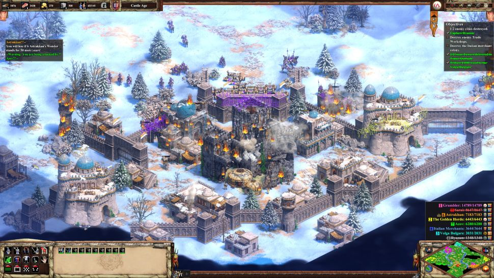

Age of Empires 2 is being wheeled out again, not quite new, but definitely improved. It wears its two decades well, but the years are still there, hidden beneath polish and new art and myriad tweaks. The Definitive Edition wavers between remaster and remake, updating nearly everything, from the art to the AI, as well as adding a trio of new campaigns and four more civilisations, but reverence for the original means that the changes, though broad and welcome, are somewhat restrained.
Much of that reverence is justified, and what made Age of Empires 2 stand out at a time when there was no dearth of excellent real-time strategy games holds it in good stead 20 years on. Though its ambitions were similar to its predecessor's, the attempt to combine real-time strategy with city building and Sid Meir's Civilization was a lot more successful the second time around. It was also simply a better, richer strategy game.
The Definitive Edition makes it easier to appreciate why it had the impact it did. Finally, in 2019, Age of Empires 2 lets you tell your villagers to automatically reseed farms! No more returning from a war to find the fields fallow and my villagers twiddling their thumbs. This might be the most exciting change for me, the most boring man in the world. It really does save a lot of headaches, though, and is one of several ways the new version gives you more control while still cutting down on unnecessary micromanagement.
Quality of life improvements might not sound like much of a headline attraction, but Age of Empires 2 needed them just as much as the new campaigns and the visual overhaul. Queuing up different units and upgrades, being able to drag and select armies without grabbing villagers by mistake, queuing commands—most of what I wished the first Age of Empires: Definitive Edition included has been introduced here. The result is a more consistent pace that leaves you with extra time to spend expanding your civilisation and commanding armies.
Whether you want to duke out against the AI or human opponents, the skirmish modes give you plenty of options. There are ten modes to choose from, including the new Empire Wars mode, which starts you off in the Feudal Age with a small town up and running, cutting out the early game. As much as I love to meticulously plan the town out myself, I'm starting to appreciate things beginning in medias res—within a few minutes I've got an army ready to go out and find some trouble.
Comment Here